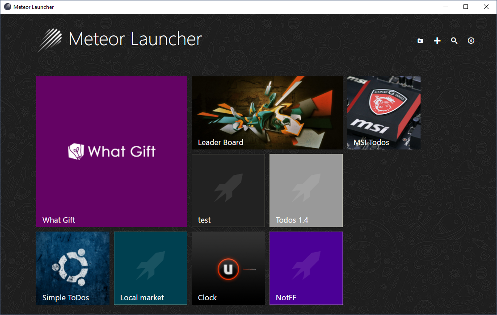
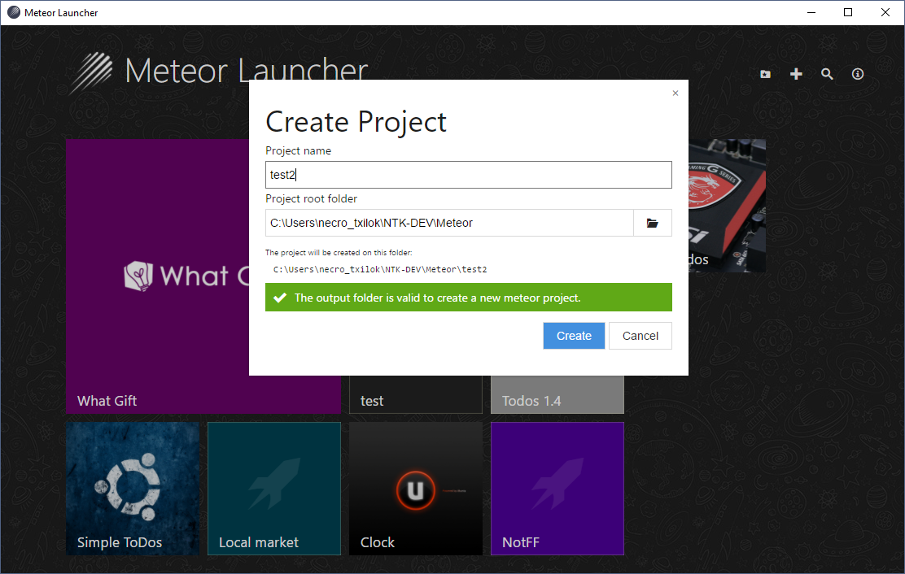
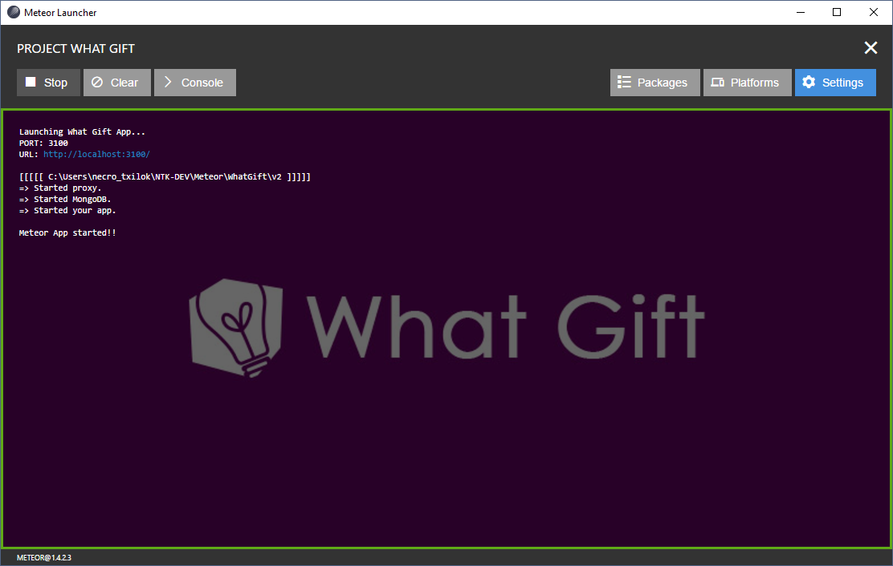
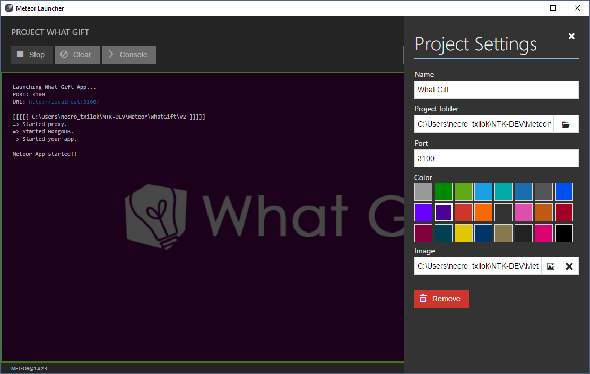
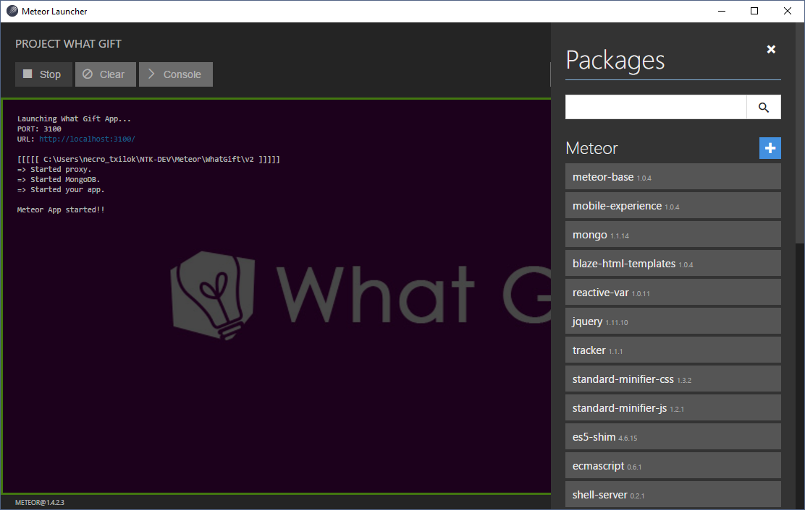
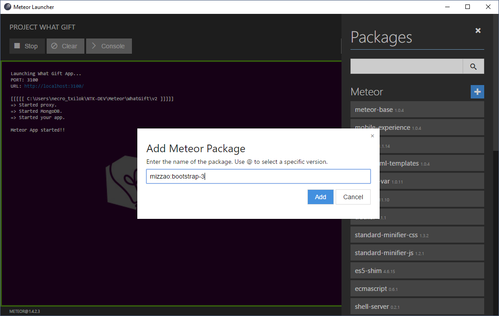
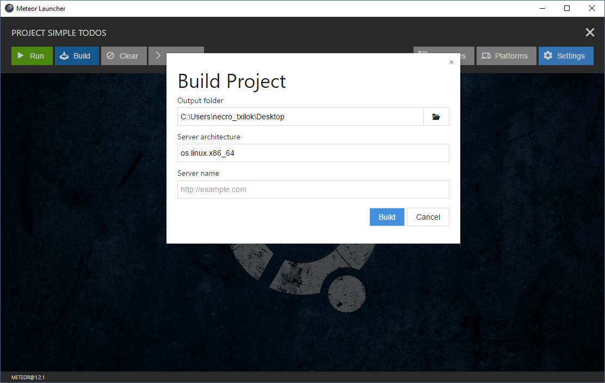
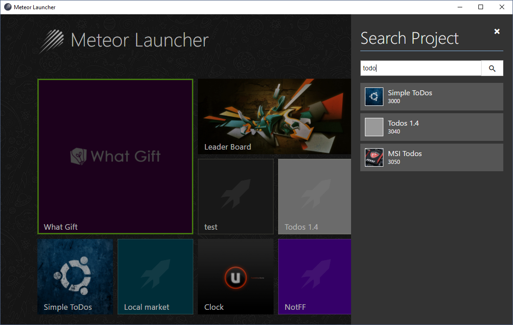
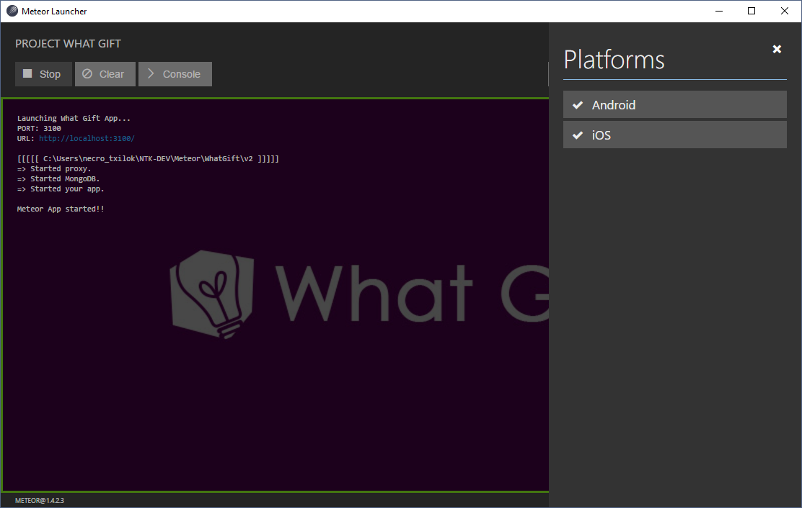
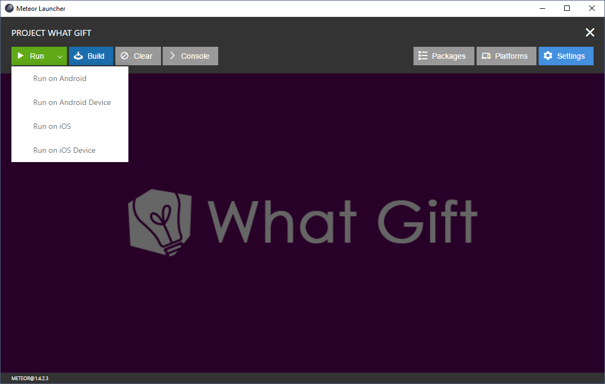

What is Meteor Launcher?
Meteor Launcher is a multi-platform desktop app to help Meteor developers create, manage, launch and build multiple Meteor projects easily.

Features
- Multiplatform! This app runs in Windows, Linux and OS X
- Friendly user interface to manage all your projects from one app.
- Configure and customize your project settings
- Create a new empty Meteor Application in a new folder
- Add existing Meteor applications located in your computer
- Control the execution of your project with real-time logs
- Add or remove platforms to run in Android and iOS
- Add or remove packages from Atmosphere or NPM to your project
- Build your application to publish in your server, Android Market o iOS Store
- Open a terminal directly in the project working directory for advanced functionalities
Screenshots









Installation
IMPORTANT!! First of all you need to install Meteor in your computer. Otherwise, this application will not work. You can install Meteor following the steps in the official site.
On Windows
Execute the installer and follow the steps.
On Linux (Ubuntu)
Extract the zip file in the folder
$ unzip meteor_launcher_linux64_1.1.0.zip -d /opt
Copy the launcher file in shared applications
$ sudo cp /opt/meteorlauncher/meteorlauncher.desktop /usr/share/applications
Now you can open the app directly from Unity.
On Mac OS X
Extract the zip file and copy the app to your Applications folder.
Next steps
- Run app in production mode for testing before build
- Button to create Meteor examples in empty directories
- Button to check package updates and update them
- Button to reset Meteor Project
- Button to update Meteor Project
- Use settings.json file on run
- General settings
- And much more...
Last changes
10/08/2015 :: Pre-release version (BETA) 12/05/2015 :: Adding New Dev Branch 12/06/2015 :: Adding Compass configuration 12/06/2015 :: Update Compass files 10/21/2016 :: Process Bug Fixing 10/23/2016 :: Releasing version 1.0 10/25/2016 :: Update NWJS and Some Bug Fixing 22/12/2016 :: Improve Process Log 26/12/2016 :: Button for clear the log 04/01/2017 :: List project platforms and packages 14/01/2017 :: Adding and removing platforms from project 27/01/2017 :: Adding and removing packages from project 28/01/2017 :: Create new projects directly from the interface 28/01/2017 :: Update NWJS to version 0.20.0 29/01/2017 :: Build projects to output folder 29/01/2017 :: Releasing version 1.1.0